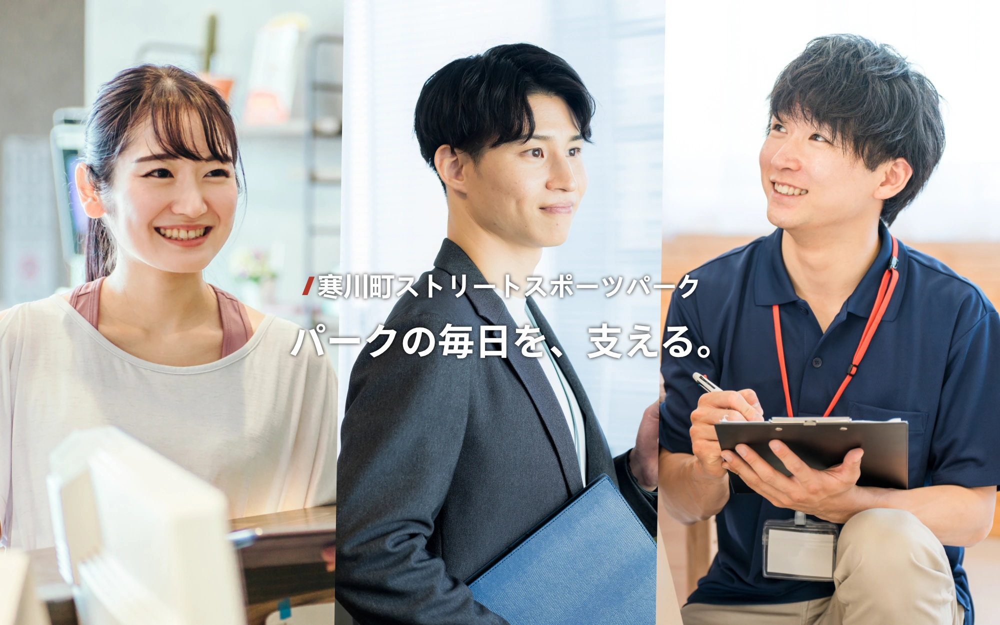
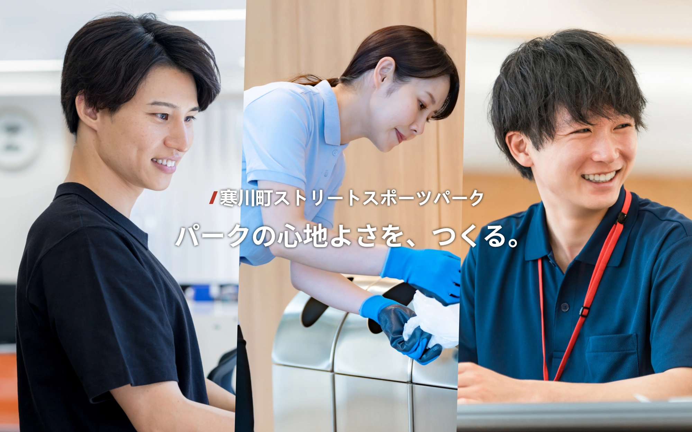

募集区分
寒川町ストリートスポーツパーク


受付社員・運営管理社員 募集
施設の受付や管理、利用者対応など、日々の運営を支える社員の採用情報です。
BMX FLATLAND・SKATEBOARD STREET講師 募集
BMXフラットランド・スケートボードストリートの講師募集です。

アルバイト・清掃スタッフ 募集
施設運営を支えるアルバイト・清掃スタッフの募集です。
寒川町相模川一之宮公園で働く
会社紹介
公園の日常と、
地域のにぎわいを支える。
園内の巡回や安全確認、利用者へのご案内、清掃・美化、地域交流イベントの運営などを通じて、寒川町相模川一之宮公園の安全で快適な環境を支える仕事です。

働く環境
- 対象
- 正社員は公園運営未経験者歓迎。アルバイトも未経験OKです。
- 勤務時間
- 正社員・アルバイトともに、公園の運営時間に合わせたシフト制です。
- 勤務日・時間帯の相談
- アルバイトは勤務日や時間帯を相談できます。
学業・家庭・Wワークとの両立に配慮してシフトを調整します。
寒川町相模川一之宮公園 社員・アルバイト募集
仕事内容
- 正社員
- 公園全体の日常運営・管理、スタッフのシフト管理・教育、利用状況や売上の集計、地域交流イベントの企画・運営、関係事業者との連絡・調整など。
- アルバイト
- 園内の巡回・安全確認、利用ルールや施設のご案内、来園者とのコミュニケーション、設備の不具合の報告、簡易清掃、イベントの運営サポート、案内・誘導など。
こんな仲間を探しています
公園や自然、人が集まる場所づくりに興味がある方。
子どもから大人まで、幅広い世代とのコミュニケーションを楽しめる方。
利用者の目線で考え、安全で快適な環境づくりに取り組める方。
募集要項
給与・募集人数・休日などは仮条件であり、公園側の運営体制に合わせて確定します。勤務時間・待遇は、公園側の運営時間・制度に合わせて別途設定します。
公園運営マネージャー（正社員）
- 勤務地
- 寒川町相模川一之宮公園
- 募集人数
- 最大1名（仮）
- 給与
- 月給30万円（仮）
- 勤務時間
- 公園の運営時間に合わせたシフト制。実働8時間・休憩1時間。
早番 10時〜19時／遅番 14時〜23時 - 休日・休暇
- 週休2日制。年間休日105日～（仮）
- 対象
- 公園運営未経験者歓迎。
接客・施設運営・スタッフ管理の経験がある方歓迎。 - 必須スキル
- Excel／Googleスプレッドシートの基本操作ができる方。
公園運営管理アルバイト
- 勤務地
- 寒川町相模川一之宮公園
- 募集人数
- 最大5名（仮）
- 給与
- 時給1,300円～1,500円（仮）。
※実務実績により昇給あり。 - 勤務時間
- 公園の運営時間に合わせたシフト制。
1日4時間～、週2日～勤務OK（仮） - シフト提出
- 月1回（毎月20日提出）（仮）
- 歓迎
- 公園や自然、屋外での活動が好きな方。
地域の方との交流、イベント運営や施設管理に興味がある方。
小さな変化に気づき、周囲と協力して行動できる方。
選考の流れ
応募
応募フォームよりお申し込みください。
面接
対面での面接を行います。
採用発表
面接後に採用を発表させていただきます。